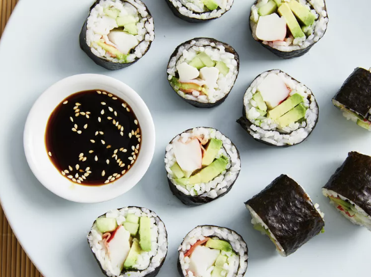

How to Make Sushi

Description
What Is Sushi?
Sushi is a traditional Japanese dish that consists of vinegared
rice, often accompanied by various ingredients such as seafood
(both raw and cooked), vegetables, and sometimes egg or tofu.
The rice is seasoned with sweetened vinegar and shaped into bite-sized
pieces or formed into rolls with seaweed or other ingredients.
What is Sushi Made Of?
Here is what you'll need to make homemade sushi:
- Water
- Uncooked Short-Grain White Rice
- Rice Vinegar
- White Sugar
- Salt
- Nori Seaweed Sheets
- Imitation Crabmeat
- Avocado
- Cucumber
- Pickled Ginger
Ingredients:
- Water: 1 and 1/3 Cups
- Uncooked Short-Grain White Rice: 2/3 Cups
- Rice Vinegar: 3 Tablespoons
- White Sugar: 3 Tablespoons
- Salt: 1.5 Teaspoons
- Nori Seaweed Sheets: 4 Sheets
- Imitation Crabmeat: 1/2 Pound, flaked
- Avocado: 1
- Cucumber: 1/2
- Pickled Ginger: 2 Tablespoons
Steps:
- Gather all ingredients. Preheat the oven to 300 degrees F
- Bring water to a boil in a medium pot; stir in rice. Reduce heat to medium-low, cover, and simmer until rice is tender and water has been absorbed, 20 to 25 minutes.
- Mix rice vinegar, sugar, and salt in a small bowl. Gently stir into cooked rice in the pot and set aside.
- Lay nori sheets on a baking sheet.
- Heat nori in the preheated oven until warm, 1 to 2 minutes
- Center 1 nori sheet on a bamboo sushi mat. Use wet hands to spread a thin layer of rice on top. Arrange 1/4 of the crabmeat, avocado, cucumber, and pickled ginger over rice in a line down the center.
- Lift one end of the mat and roll it tightly over filling to make a complete roll. Repeat with remaining ingredients.
- Use a wet, sharp knife to cut each roll into 4 to 6 slices.